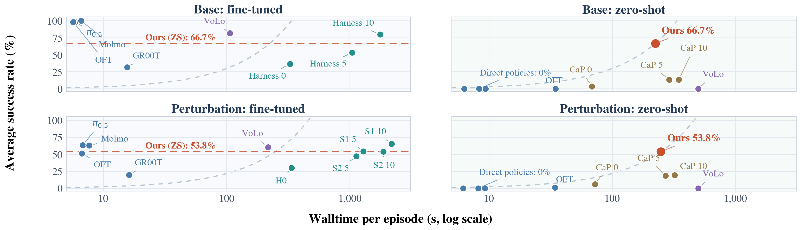

Action selection
What should the robot do next to advance the stated subgoal?
 University of Illinois Urbana-Champaign
University of Illinois Urbana-Champaign
* Equal contribution, interchangeable order.
MotorMind bridges VLM reasoning and robot control through mid-level actions, continual refinement, and asynchronous verification, enabling strong zero-shot manipulation without task-specific training.
Vision-language-action (VLA) models have advanced robotic manipulation, but their zero-shot generalization remains limited, and their reliance on specialized robotics data keeps them from benefiting directly from rapidly advancing general-purpose vision-language models (VLMs). Agentic robotic systems instead use VLMs for high-level reasoning, yet typically depend on substantial external modules. This motivates our question: Can a general-purpose VLM itself serve as the decision-making core for robotic manipulation? Evaluating VLMs on action selection, progress assessment, and task completion reveals a capability-control gap: VLMs reason well about manipulation, but their decisions do not match the abstraction of continuous, embodiment-specific control. We introduce MotorMind, a VLM-centric manipulation harness with an asynchronous inference loop. Without task-specific policy training, MotorMind achieves 66.7% base success and 53.8% success under perturbations on LIBERO-PRO, compared with at most 13.3% and 19.2% for the prior zero-shot methods we evaluate, and the same interface reaches 95% average success on a real xArm6 robot across direct manipulation and human-perturbation settings. A stronger VLM backbone further raises base success without changing the harness, and the remaining errors, mainly in visual grounding, embodied reasoning, and action knowledge, decrease with stronger VLMs. These results reframe zero-shot manipulation as aligning general-purpose model capabilities with the control representation, rather than solely learning specialized action policies.

Understanding VLM decisions
Can a general-purpose VLM make the decisions needed for manipulation? This diagnostic evaluation probes three capabilities with 240 visual questions, 80 per capability, drawn from robot observations.
What should the robot do next to advance the stated subgoal?
Did the observed transition make progress toward the subgoal?
Does the current state satisfy the subgoal and its success criterion?
| Model | Translation (48) | Rotation (19) | Gripper (13) |
|---|---|---|---|
| Qwen3.8-Flash-Next-FP8 | 47.92% (23/48) | 0.00% (0/19) | 46.15% (6/13) |
| HY-Embodied-0.5 MoT-2B | 20.83% (10/48) | 15.79% (3/19) | 23.08% (3/13) |
| Hy-Embodied-VLM-1.0 A3B | 31.25% (15/48) | 0.00% (0/19) | 0.00% (0/13) |
| Cosmos3-Nano (understanding tower) | 27.08% (13/48) | 0.00% (0/19) | 15.38% (2/13) |
| GLM-5.3-Flash | 41.67% (20/48) | 15.79% (3/19) | 53.85% (7/13) |
| GPT-6 Astra (medium) | 58.33% (28/48) | 63.16% (12/19) | 61.54% (8/13) |
These decisions motivate the MotorMind design: propose short action sequences, observe their effects, and reassess progress using robot feedback.
From reasoning to action
One frozen VLM takes five complementary roles: Planner, Executor, Monitor, Verifier, and Memory. A deterministic Controller turns its proposals into physical motion.

The VLM proposes parameterized moves, rotations, and gripper actions. The controller validates and executes them.
Fresh observations and measured feedback inform the next proposal. Outcomes determine whether to advance, retry, or replan.
The Monitor checks ongoing execution and can cancel pending commands at an action boundary. Memory updates run in the background.
Zero-shot manipulation
On LIBERO-PRO, MotorMind achieves the highest success among the evaluated zero-shot methods. Success rate and episode wall time are reported together.


Figure 4 from the paper compares success and execution time across base and perturbed tasks, separating fine-tuned policies from zero-shot methods.

| Method | Configuration | Base success rate (%) | Perturbation success rate (%) | Base efficiency | Perturbation efficiency | |||||||||
|---|---|---|---|---|---|---|---|---|---|---|---|---|---|---|
| Goal | Spatial | Object | Avg. | Semantic | Object | Position | Task | Avg. | Time (s) ↓ | Time score ↑ | Time (s) ↓ | Time score ↑ | ||
| Fine-Tuned Policies / Agentic Methods with Fine-Tuned Policies | ||||||||||||||
| π₀.₅ | Fine-tuned | 95.0 | 100.0 | 100.0 | 98.3 | 98.3 | 95.0 | 36.7 | 23.3 | 63.3 | 5.9 | 997.1 | 6.8 | 562.1 |
| MolmoAct2 | Fine-tuned | 100.0 | 100.0 | 100.0 | 100.0 | 95.0 | 90.0 | 36.7 | 30.0 | 62.9 | 6.6 | 914.6 | 7.7 | 492.2 |
| OpenVLA / OFT | Fine-tuned | 95.0 | 100.0 | 100.0 | 98.3 | 96.7 | 86.7 | 11.7 | 10.0 | 51.2 | 5.7 | 1033.5 | 6.7 | 459.9 |
| GR00T N1.5 | Fine-tuned | 0.0 | 95.0 | 0.0 | 31.7 | 30.0 | 30.0 | 1.7 | 16.7 | 19.6 | 15.6 | 121.8 | 16.2 | 72.4 |
| VoLoAgent (FT VLA as Tool) | Zero-shot agent | 55.0 | 90.0 | 100.0 | 81.7 | 88.3 | 83.3 | 45.0 | 25.0 | 60.4 | 106.2 | 46.1 | 216.9 | 16.7 |
| Harness VLA (FT VLA as Tool) | Zero-shot | 35.0 | 30.0 | 30.0 | 31.7 | 30.0 | 31.7 | 28.3 | 25.0 | 28.8 | 354.6 | 5.4 | 342.5 | 5.0 |
| Harness VLA (FT VLA as Tool) | Learnt on task · 5 loops | 55.0 | 50.0 | 55.0 | 53.3 | 65.0 | 51.7 | 50.0 | 50.0 | 54.2 | 1040.4 | 3.1 | 1286.2 | 2.5 |
| Harness VLA (FT VLA as Tool) | Learnt on task · 10 loops | 70.0 | 90.0 | 80.0 | 80.0 | 75.0 | 66.7 | 53.3 | 66.7 | 65.4 | 1764.0 | 2.7 | 2184.1 | 1.8 |
| Harness VLA (FT VLA as Tool) | Learnt on base · 5 loops | — | — | — | — | 55.0 | 48.3 | 43.3 | 41.7 | 47.1 | — | — | 1125.2 | 2.5 |
| Harness VLA (FT VLA as Tool) | Learnt on base · 10 loops | — | — | — | — | 70.0 | 58.3 | 41.7 | 45.0 | 53.8 | — | — | 1866.2 | 1.7 |
| Zero-Shot Methods | ||||||||||||||
| π₀.₅ | Zero-shot | 0.0 | 0.0 | 0.0 | 0.0 | 0.0 | 0.0 | 0.0 | 0.0 | 0.0 | 8.3 | 0.0 | 8.2 | 0.0 |
| MolmoAct2 | Zero-shot | 0.0 | 0.0 | 0.0 | 0.0 | 0.0 | 0.0 | 0.0 | 0.0 | 0.0 | 9.4 | 0.0 | 9.3 | 0.0 |
| OpenVLA / OFT | Zero-shot | 0.0 | 0.0 | 0.0 | 0.0 | 0.0 | 0.0 | 0.0 | 3.3 | 0.8 | 34.7 | 0.0 | 34.4 | 1.5 |
| GR00T N1.5 | Zero-shot | 0.0 | 0.0 | 0.0 | 0.0 | 0.0 | 0.0 | 0.0 | 0.0 | 0.0 | 6.3 | 0.0 | 6.2 | 0.0 |
| CaP-X (GPT5.6-Terra + Claude Opus 5) | Zero-shot | 5.0 | 0.0 | 5.0 | 3.3 | 15.0 | 3.3 | 1.7 | 3.3 | 5.8 | 68.5 | 2.9 | 72.4 | 4.8 |
| CaP-X (GPT5.6-Terra + Claude Opus 5) | 5 loops | 25.0 | 0.0 | 15.0 | 13.3 | 25.0 | 16.7 | 16.7 | 15.0 | 18.3 | 290.1 | 2.8 | 270.2 | 4.1 |
| CaP-X (GPT5.6-Terra + Claude Opus 5) | 10 loops | 25.0 | 0.0 | 15.0 | 13.3 | 26.7 | 16.7 | 16.7 | 16.7 | 19.2 | 346.4 | 2.3 | 320.4 | 3.6 |
| VoLoAgent (zero-shot VLA as Tool) | Zero-shot | 0.0 | 0.0 | 0.0 | 0.0 | 0.0 | 0.0 | 0.0 | 0.0 | 0.0 | 500.0 | 0.0 | 500.0 | 0.0 |
| MotorMind (Qwen3.8-Flash-Next) | Zero-shot | 45.0 | 75.0 | 80.0 | 66.7 | 58.3 | 46.7 | 51.7 | 58.3 | 53.8 | 223.4 | 17.91 | 248.5 | 12.99 |
Time score = 60 × success rate (%) / episode wall time (s), in percentage points per minute. Bold and underlined values mark the best and second-best results within each group. A dash denotes an unreported result.
When the world changes
Moving objects, shifted destinations, and revised instructions require decisions grounded in the latest observation.
Identify moving targets through semantic, relational, or temporal descriptions.
Continue toward the same goal after an object or destination moves.
Track and manipulate targets moving on a conveyor.
Respond to an updated instruction without resetting the scene.
From simulation to the real world
The same VLM-facing interface operates an xArm6 with RealSense D455 observations, without task-specific demonstrations or policy fine-tuning.
Success across direct manipulation
and human perturbations · 114 / 120 trials
When an approach heads toward the wrong region, the Monitor flags the mismatch. The Executor uses a new observation to re-localize the target and continue.